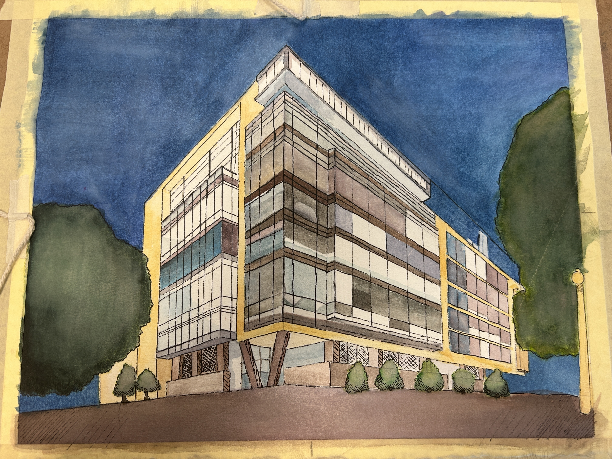
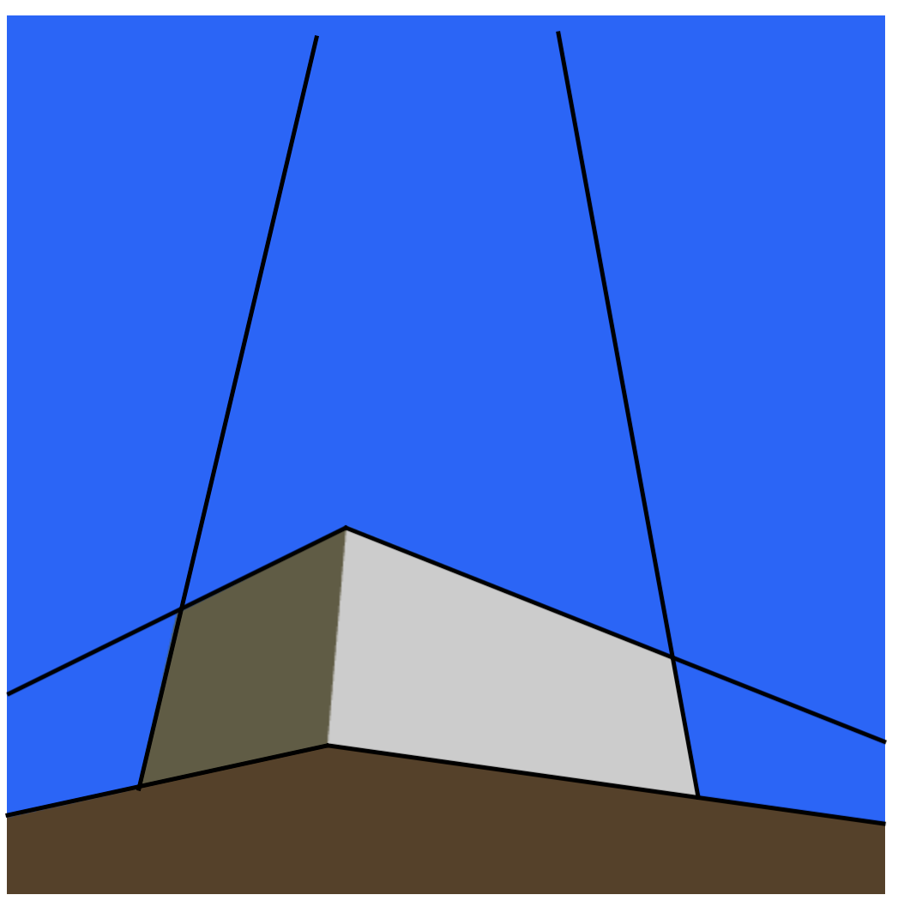

Homework #3 By Bogdan Bunea
The Above shows the image to recreate and the bottom shows a low level rendering
SEH is approx 58m by 104m by 33m (width, length, height) and we will use these
ratios to build our render of the building.
2) This is building is a three point perspective as it has three vanishing points as seen below.
